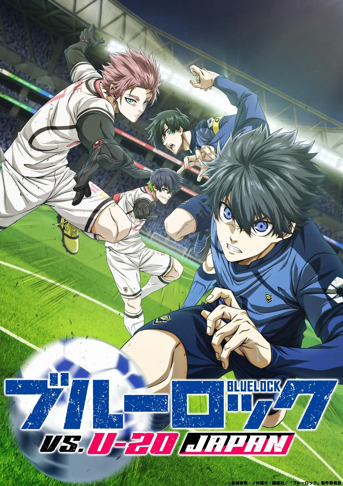
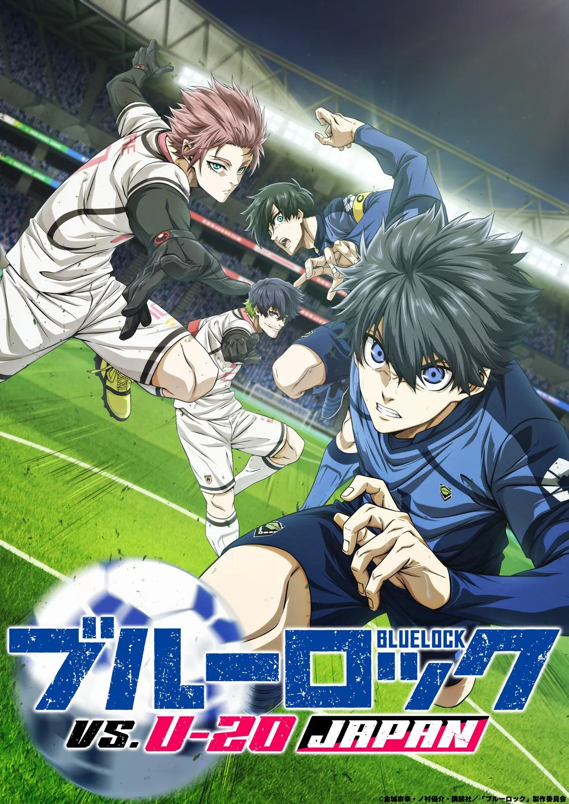

Hi there! I'm Ben, a CS MS student at Stanford University advised by Prof. Jerry Cain. I also did my undergrad at Stanford (2020-2024), completing a BS double major in CS and Math, and a Minor in Creative Writing. During my senior winter, I studied abroad at the University of Oxford, embarking on a Tutorial in Creative Writing. In my free time, I enjoy manga and anime, and listening to J-pop, soundtracks, and rock music üé∏.
My name in Chinese is 颜斌 (Mandarin: Yán Bīn).
Teaching
I love teaching, and want to help make computer science education accessible and welcoming for everyone! At Stanford, I have the privilege of supervising CS section leaders and teaching introductory programming (Python, JavaScript, C, Assembly languages), web applications, computer systems, Unix OS, and coding for social good.
This upcoming autumn (winter and spring TBD), I'm excited to be teaching:
Programming Methodologies in JavaScript and Python
Head TA (üçÅ Autumn 25-26, Prof. Jerry Cain)
Previously, I've had the great pleasure of teaching:
Programming Methodologies in JavaScript and Python
Head TA (üçÅ Autumn 24-25, Prof. Jerry Cain)
Computer Organization and Systems
Teaching Assistant (☃️ Winter 24-25, Prof. Jerry Cain)
Teaching Assistant (üå± Spring 24-25, Prof. Nick Troccoli)
Head TA (üê¨ Summer 24-25, Profs. Ola Adekola, Adam Keppler)
Lecturer (üçÅ Autumn 23-24, Faculty Sponsor: Jerry Cain, 4.6/5.0 )
Lecturer (üå± Spring 23-24, Faculty Sponsor: Jerry Cain), 4.5/5.0 )
Lecturer (üçÅ Autumn 24-25, Faculty Sponsor: Jerry Cain, 4.8/5.0 )
Lecturer (☃️ Winter 24-25, Faculty Sponsor: Jerry Cain, 4.7/5.0 )
Lecturer (üå± Spring 24-25, Faculty Sponsor: Jerry Cain, 5.0/5.0 )
My last iteration of CS 106S was super fun as always, and the highest-rated course in the entire CS department that term (when considering courses with >30 students)! I'm endlessly grateful and indebted to all my students, and they've taught me so much.
As an undergrad, I was also a Math Department SUMO peer tutor for two years, holding weekly, deadline-night office hours for MATH 18, 19, 20, 20, and 51 simultaneously.
Education
üå≤ Stanford University
M.S. Candidate, Computer Science (AI Track)
Advisor: Prof. Jerry Cain. CS198 Section Leading (TA)
üå≤ Stanford University
B.S. Double Major, Computer Science and Mathematics
Minor, Creative Writing
Advisor: Prof. Jerry Cain. Stanford CS + Social Good, SUMO, SciOly
üè¥Û†ÅßۆŢۆŕۆÅÆÛ†ÅßÛ†Åø University of Oxford
Brasenose College, Study Abroad, Hilary Term 2024
Tutorial in Creative Writing with Prof. Jennifer Wong. Brasenose Arts üé≠.
üåÉ University of Minnesota, Twin Cities
Talented Youth Mathematics Program (UMTYMP) Graduate
Accelerated 5-yr sequence of HS math (6th-7th grade) & Calc I-III (8th-10th)
Writing has saved my life, and honestly, had I not started taking fiction and poetry courses in college, I'd probably not be here right now. The courses I've taken include:
- ENGLISH 9CE — Creative Expression (☃️ Winter 21-22, Nina Schloesser Tárano)
- ENGLISH 24Q ‚Äî Leaving Patriarchy (üå± Spring 21-22, Nina Schloesser T√°rano)
- ENGLISH 17Q ‚Äî 21st Century Science Fiction (üå± Spring 21-22, Melissa Stevenson)
- ENGLISH 90 ‚Äî Fiction Writing (üçÅ Autumn 22-23, Georgina Beaty)
- ENGLISH 92 — Reading & Writing Poetry (☃️ Winter 22-23, Kai Carlson-Wee)
- ENGLISH 190YA — YA Fiction (☃️ Winter 22-23, Nina Schloesser Tárano)
- ENGLISH 190W ‚Äî Contemporary Women Writers (üå± Spring 22-23, Nina Schloesser T√°rano and Elizabeth Tallent)
- ENGLISH 39Q ‚Äî Charles Dickens (üå± Spring 22-23, Gabriel Wolfenstein)
- ENGLISH 190E ‚Äî Novel-Writing Intensive (üçÅ Autumn 23-24, Tom Kealey and Scott Hutchins)
- Oxford Tutorial — Short Stories & Poetry (☃️ Winter 23-24, Jennifer Wong)
- ENGLISH 290 ‚Äî Advanced Fiction Writing (üå± Spring 23-24, Kirstin Valdez Quade)
- ENGLISH 91V ‚Äî Creative Nonfiction (üê¨ Summer, Sterling HolyWhiteMountain)
Honors
Stanford CS Graduate Teaching Assistantship, full funding for MS degree
National Novel Writing Month Winner, wrote two novels (50,000 words each) in one month (Nov 2023, as the project of my English 190E class)
U.S. Presidential Scholar, one of 161 graduating seniors selected in the U.S.
Volunteering
- üåâ Golden Gate Science Olympiad ‚Äî Event Supervisor for Remote Sensing (2023), Dynamic Planet (2024), Dynamic Planet (2025)
- üå≤ Stanford Science Olympiad ‚Äî Event Supervisor for Astronomy (2023), Ecology (2024), Astronomy (2025)
- üèûÔ∏è NorCal State Science Olympiad ‚Äî Event Supervisor for Road Scholar (2024, 2025), Fossils (2024), Geologic Mapping (2024), Meteorology (2025)
Personal
Favorite Manga, Anime, Adaptations
My all-time favorite manga is Chainsaw Man / チェンソーマン, and my favorite anime is Jujutsu Kaisen / 呪術廻戦. I've never seen a movie I liked more than Weathering with You / 天気の子 (2019) or Spirited Away / 千と千尋の神隠し (2001). I also like:


 



Miscellaneous Facts
- I'm deathly scared of heights, but love rollercoasters to death
- My favorite food dish is probably 牛肉面 (beef noodle soup), apple pie, fish and chips, pad see ew, or miso soup because it makes miso happy.
- My most-listened-to music artists include üé∂ YOASOBI, Charli XCX, Radwimps, Dua Lipa, Kenshi Yonezu, LiSA, Hashimero, Minami, Clean Bandit, BTS, and Olivia Rodrigo. Always looking for album or song recommendations!
- I'm bilingual in Mandarin Chinese & English, and learning Japanese currently! I recently finished reading my first manga volume in Japanese, チェンソーマン　12: 鳥と戦争, and my goal is hopefully to read one new volume a week.